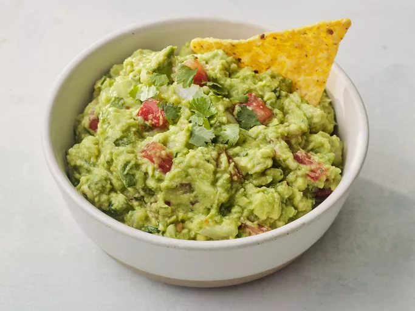

Guacamole

Guacamole Ingredients
These are the ingredients you'll need to make this irresistible guacamole recipe:
- Avocados: Of course, you'll need avocados!
- Lime: Lime juice adds brightness and slows down the browning process.
- Salt: A teaspoon of salt enhances the flavors of the other ingredients.
- Vegetables: You'll also need an onion and roma tomatoes.
- Herbs and spices: Fresh cilantro, minced garlic, and cayenne pepper add tons of flavor.
How do you make guacamole?
It couldn't be easier to make restaurant-worthy guac at home: Simply mix all the ingredients together! That's it. You'll find the step-by-step recipe below.
- Gather all ingredients.
- Mash avocados, lime juice, and salt together in a medium bowl; mix in tomatoes, onion, cilantro, and garlic.
- Stir in cayenne pepper. Serve immediately, or cover and refrigerate for 1 hour for improved flavor.